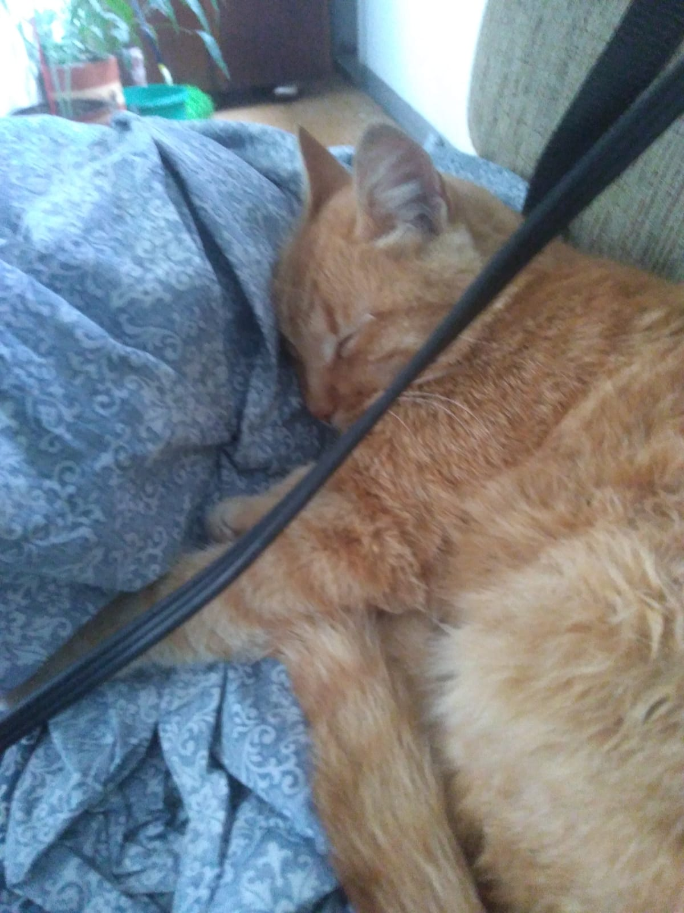
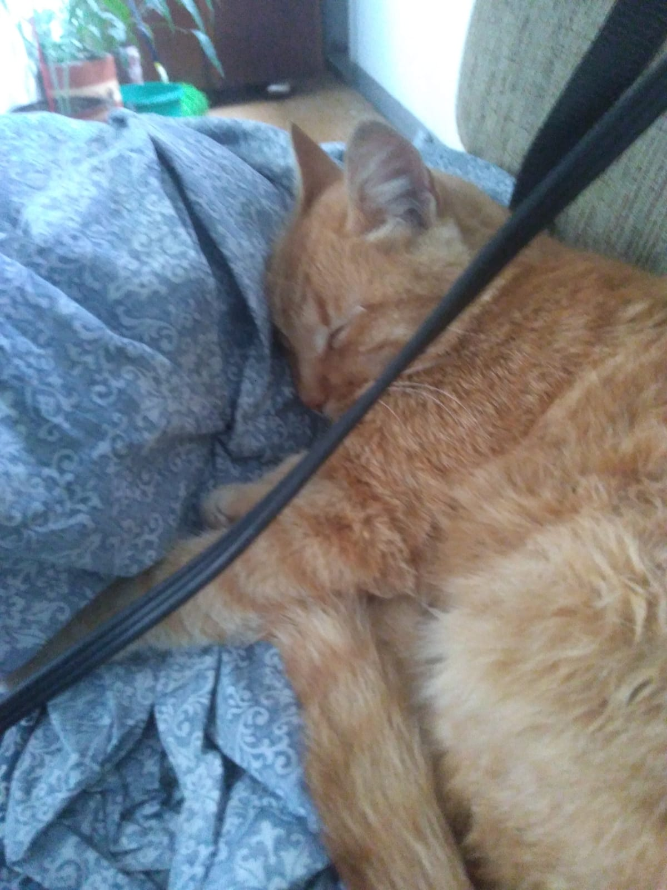

-
Bienvenida mi querida Janny!!!
Esta vez quise hacer uso de mis habilidades y decicí hacer una pequeña página web dedicada a tí. En esta primera versión he decidido hacer un pequeño resumen sobre lo que he vivido contigo hasta ahora y también para decirte de una manera no tradicional que pienso de tí. Espero te agrade.
 

-
En construcción...
-
Resumen
Si te gusta leer, conmigo vas a tener un poco de lectura personalizada, con contenido, sólo por tí y sólo para tí, porque me gusta escribirte, y de alguna u otra forma lo uso como puente para decirte lo mucho que me importas y me interesas.
Si te hubiera conocido siendo ciego, igual me hubieras encantado ya que tienes una personalidad muy cautivadora. En cierto y modo, esa fue la manera en que te conocí, porque primero conocí a la Jannya con sus cualidades, manera de ser, gustos, sobre sus sentimientos, conocí todo esto mucho antes de verte físicamente, y aunque si había visto un par de fotos tuyas, no es lo mismo definitivamente.
Si hubiera sido ciego, hubiera lamentado no haber podido conocer esos ojitos de miel que tienes, que me deslumbran y me producen sosiego. También hubiera lamentado no haber visto esa sonrisa tan particular y tierna que tienes, porque no es una sonrisa fingida, esas de aquellas que la gente usa 5 segundos para una fotografía. No, la tuya es totalmente natural y auténtica.
Yo no creo que a las mujeres les haya dejado de gustar los detalles, que las traten bien, con cariño, que las hagan sentir cómo a unas princesas, no. Eso no ha dejado de pasar, es sólo que los hombres (no todos claro está) han dejado a un lado esa parte romántica y sentimental. Muchas se han acostumbrado o han simplemente aceptado lo poco que le ofrecen y a eso hoy en día le llaman amor. Muchos hombres perdieron la capacidad de conqquistar a una mujer como debe ser, es por eso que es tan común ver madres solteras porque esos hombres resultaron no ser tan hombres. Yo no soy quien para decir que tipo de hombre soy, prefiero demostrarle con hechos y con constancia, creo que tu has sido testigo hasta ahora de eso, y créeme que seguirá siendo así.
Te preguntarás porqué hago todo este tipo de cosas por tí. Por qué tomarme la molestia de dedicarte canciones y estados, hacerte flores en origami, dedicarte poemas, hacerte una nota para que solo pueda leerse en un espejo, inventarse un juego de ahoracado para invitarte a salir , e incluso crear una página web dedicada a ti. No tengo una respuesta específica a esa pregunta. Lo que si puedo decirte es que, como una de las canciones que te mandé, pienso mucho en ti Janny, me has comenzado a importar y a interesarme en tus cosas, entre mas te conozco mas agradable me pareces y mas descubro cosas que compartimos los dos. Y ¿cómo no? interesarme en una persona con la que puedo hacer tantos planes, yo sería feliz contigo llendo al teatro contigo, llendo a bailar, a puebliar, saltar en parapente, ir al mar, disfrutar de un buen bar, ir a comer (incluso contigo hasta podría disfrutar comer una empanada o un buñuelo). Sin mencionar los planes que hemos hecho de una maratón de Harry Potter o ver el death note completo juntos. Me entusiasma la idea también de que tengamos visiones tan similares respecto al amor, un amor de época cómo alguna vez lo leí en tus estados, un amor limpio, sincero apasionado, donde cada uno entregue lo mejor de sí. Esta puede no ser una respuesta concreta, pero si son causas que me suscitan a hacer lo que hago y justifican de alguna forma todo este tipo de detalles.
Cómo no apostar por alguien así, si es que yo he tenido la fortuna de entre más 3 millones de personas que somos acá en el valle de Aburrá, dar contigo y tener la maravillosa experiencia de conocerte. Janny, vales un montón y te lo voy a hacer sentir cada vez que te tenga la oportunidad. Te quiero y te lo digo de corazóm.
-
En construcción...